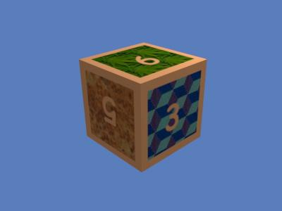
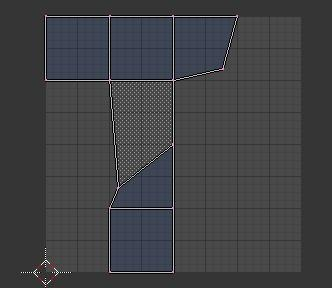
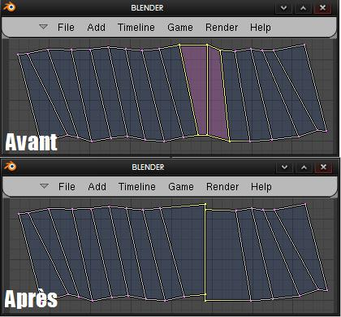

Lorsqu'on fait de la modélisation 3D, plusieurs choses influencent le résultat final : l'éclairage, la modélisation, la post-production et bien sûr les textures. Plusieurs méthodes se proposent à l'artiste pour appliquer des textures à ses modèles, mais l'UV-mapping est sûrement celle qui permet d'avoir le plus de liberté. L'UV-mapping dans Blender (terme français : "Plaquage de carte UV") n'est pas une mince affaire lorsqu'on ne sait pas comment s'y prendre. Ce tutoriel a pour but de démystifier ce procédé et d'expliquer le fonctionnement de cette méthode.
Prenez note que ce tutoriel s'adresse aux versions 2.46 et plus récentes.
Le plaquage de carte UV (T.B. : UV-mapping) est une méthode de plaquage de textures qui consiste à déplier (T.B. : unwrap) votre objet en une sorte de carte plane. Cette carte est représentée sur un plan bidimensionnel de coordonnées U et V (Et non X et Y). Sur celle-ci, on placera une image qui servira de texture. Cette image sera déformée, suivant les lignes de découpe du dépliage de la carte que vous aurez faites, pour être appliquée sur votre objet.
J'ai pas tout compris là... o_O
Cette description semble bien compliquée, mais elle est en fait très simple. Étant donné qu'une image vaut mille mots, regardez l'exemple ci-dessous.
Voici donc mon objet en mode édition (T.B. : Edit Mode) :
Lorsque celui-ci sera déplié, (T.B. : Unwrap) sa carte UV ressemblera à quelque chose du genre :
Avec ce modèle, on peut donc créer notre texture. Celle-ci, lorsqu'appliquée, sera plaquée sur notre objet. Voici donc la texture que j'ai créée pour mon cube et ce dernier avec celle-ci plaquée sur lui :

Comme vous pouvez le voir, la texture a bel et bien été appliquée au cube.
Oui, mais ne pourrait-on pas faire ça avec la méthode habituelle de plaquage de textures ? :o
Nous pourrions facilement le faire avec une texture sur chaque face du cube, mais imaginez faire de même avec un objet plus détaillé (ex. : un humain). Ce serait impossible de lui appliquer des textures complexes et complètes. Cette méthode permet d'économiser beaucoup de temps et d'efforts et permet aussi d'offrir une flexibilité élevée en ce qui concerne l'apparence de nos modèles en 3D.
Nous allons travailler avec notre belle Suzanne, toujours fidèle au poste. Faites donc une nouvelle scène (Ctrl + X > Erase All ou File > New > Erase All).
Effacez le cube, s'il y en a un (X ou Delete), puis passez en vue de face (Num 1). Ajoutez Suzanne (Barre Espace > Add > Mesh > Monkey) à la scène. Faites passer votre scène en mode objet ( T.B. Object Mode) si ce n'est pas déjà fait. Maintenant, assurez-vous que le singe vous fait face. Si ce n'est pas le cas, appliquez une rotation de 90 degrés sur l'axe des x (R > X > Num 90).
Maintenant que notre modélisation est terminée (oh lala, que c'était dur :) ), nous devons préparer notre modèle à être déplié et à recevoir la texture.
D'accord! Euh... Comment fait-on ? :-°
Pour que notre belle petite Suzanne se déplie correctement, nous devons commencer par indiquer le chemin à Blender.
Pour se faire, nous devrons lui indiquer où couper. Ceci est surement l'étape cruciale de chacun de vos dépliage UV. Il est important de choisir les bons endroits ou couper le modèle. Un petit truc : Coupez par sections.
Ici, nous couperons notre Suzanne en trois sections : yeux, tête et oreilles. Les yeux seront détachés de la tête sur la carte UV et seront indépendants. La tête sera coupée en son centre et chaque oreille sera séparée de la tête et coupée en deux (soit l'intérieur et l'arrière). Bien sûr, il y a une infinité de façon de découper Suzanne, mais j'ai choisi celle-ci.
Bien sûr, chaque modèle étant différent, chacun de vos découpages le sera aussi. Le choix des sections vous revient, et le choix des lignes de découpe aussi, mais retenez bien une chose : il faut y aller avec la logique.
Peut-être aurez-vous 4, 6, 20 sections, ou bien seulement une, mais l'important est que vous découpiez bien aux endroits principaux (les contours, les coins, etc.). Ne vous inquiétez pas, vous allez mieux comprendre au fil de votre dépliage et avec de la pratique.
Débutez donc par passer en vue de haut (Num 7) et en mode édition (TAB si vous êtes en mode objet). C'est maintenant qu'on commence :pirate: . Sélectionnez les 3 vertices situés au centre du crâne de Suzanne (SHIFT + BSD) comme sur l'exemple.
Nous choisissons ceux-ci car ils permettrons de découper la tête en deux, ce qui facilitera la vision globale du modèle sur la carte UV.
Ensuite, passez en vue de dos (CTRL + 1) et tournez autour de Suzanne pour bien voir le dos de sa tête. Sélectionnez les vertices (SHIFT + BSD) comme sur l'exemple, en conservant ceux sélectionnés plus haut. La selection de ces vertices se fait pour la même raison que ceux sélectionnés plus haut. Faites une rotation autour de la tête de suzanne pour vérifier que vous avez bien tout sélectionné.
Faites CTRL + E et sélectionnez Mark Seam. Mark Seam sert à indiquer que cette sélection servira à couper l'objet. C'est cette option qui indique les lignes de coupe à Blender. Si vous avez fait une erreur lors de vos Mark Seams, l'option Clear Seam sert à indiquer que la sélection ne servira pas à couper l'objet. Elle rend donc aux vertices leur assignation d'origine.
Désélectionnez tout (A). Une ligne orange reste visible. C'est votre sélection de découpe. Tournez autour de Suzanne pour voir son oreille gauche. Nous allons séparer la partie extérieure de l'oreille de la parti intérieure. Sélectionnez le contour intérieur de l'oreille comme sur l'image. Petit astuce : Alt+BSD sur un des vertices ou edge et le tout sera sélectionné complètement. En effet, cette combinaison de commande permet de sélectionner des lignes complètes. Faites un Mark Seam pour avoir le résultat ci-dessous :
Faites la même opération pour l'oreille droite. Nous allons maintenant sélectionner tout le reste du contour de l'oreille, pour la séparer du crâne. Faites un Mark Seam sur les vertices comme sur l'image, et répétez l'opération sur l'oreille opposée :
Si vous conservez le mode édition, déselectionnez tous les vertices (A) et que vous tournez autour de Suzanne, vous pouvez parfaitement voir toutes vos démarcations pour le découpage :soleil: :
Bien, notre objet est maintenant prêt ! Les yeux n'étant pas liés au maillage principal, ceux-ci seront séparés automatiquement lors de notre dépliage. ^^
Vous pouvez tout de même vous pratiquer en leur appliquant des seams sur leurs contours, mais ce n'est pas obligatoire. Petits indices tout de même : l'utilisation du mode transparent (Z) en Edit mode et l'utilisation de la touche ALT+ BSD (pour sélectionner un contour) sont vraiment utiles.
Pour afficher notre carte UV dépliée, nous devons aller dans la fenêtre UV. Commencez par séparer votre écran. Pour se faire, 1. descendez votre curseur vers le bas, jusqu'à ce que vous voyez un curseur à deux flèches. Cliquez sur le bouton du centre de votre souris (La roulette) et 2. cliquez sur Split Area.
Une ligne semi-transparente va apparaître dans la fenêtre 3D. C'est votre curseur de division. C'est là où votre écran sera partagé. Déplacez le curseur de division au centre de votre fenêtre, comme ceci :
Eh oui ! Mais c'est surtout très utile ;) .
Dans la partie de votre choix, passez à la fenêtre UV/Image Editor. Les autres fenêtres ont d'autres utilités, à vous de les découvrir. Vous obtiendrez un espace en damiers, comme ci-dessous :
Sélectionnez Suzanne dans la fenêtre 3D et passez en mode Edit. Sélectionnez toutes les faces avec la touche A. C'est très important, car les faces sélectionnées seront les seules à être dépliées. Faites ensuite la touche U. Un menu s'affiche avec une multitude de choix.
Mais qu'est-ce que c'est que tout ce charabia ?
Ce sont les différentes options de dépliage (T.B. Unwrapping) qu'offre Blender. Nous ne verrons pas ici comment fonctionne chacune de ces options, mais vous pouvez faire vos propres tests pour trouver leur utilité. Ici, nous allons utiliser la méthode que j'utilise le plus souvent et qui va utiliser les seams que nous avons marqués comme ligne de découpe, c'est-à-dire Unwrap.
Votre carte UV (T.B. UV map) dépliée apparaît dans la fenêtre de gauche (ou peut importe où vous aurez assigné la fenêtre UV) :
Comme vous pouvez le voir, les différentes parties de Suzanne sont présentes, mais leurs positions sur la carte laissent à désirer. Pour régler ce problème, sélectionnez un point sur la carte et appuyez sur L pour que la face choisie soit sélectionnée (ici, la plus grosse).
Faites ensuite une rotation pour placer cette sélection correctement. Faites de même pour les autres parties avec les différents outils (R pour la rotation, G pour déplacer, S pour redimensionner, M pour Mirroir) pour obtenir ce résultat :
Notez que, si vous le voulez, vous pouvez mettre les parties qui ont des textures identiques une par dessus l'autre. Ça permet d'avoir une texture plus légère.
Bien, maintenant nous avons notre mascotte préférée découpée et dépliée (T.B. Unwrap).
Même si notre carte UV pourrait être utilisée comme telle, quelques problèmes liés au dépliage peuvent rendre notre carte moins lisible, moins propre et moins précise. Il faut donc régler ces divers problèmes au plus tôt, pour ne pas avoir à retravailler la texture, ce qui serait beaucoup plus problématique que de faire quelques manipulations dans Blender.
Nous allons donc voir les différents types de problèmes que vous pouvez rencontrer. Il en existe certainement plusieurs autres, mais ici seront présentés les plus fréquents.
Chevauchement
Le chevauchement, c'est quand deux faces sont une par dessus l'autre. Lorsqu'on va appliquer notre texture, si il y a chevauchement, celle-ci sera mal distribuée et le résultat pourrait devenir étrange. Il est donc important de vérifier s'il n'y a pas de chevauchement. Aussi, faites bien attention à regarder de près, parce que les chevauchements peuvent se produire à très petites échelles.
Ce type de problème dépend surtout de la façon dont le modèle est déplié (T.B. Unwrap), à cause du fonctionnement des algorithmes de dépliage, mais aussi de comment les seams sont appliqués.
Nous allons prendre ce cube comme exemple (Notez qu'ici j'ai exagéré pour la cause, parce que vous aurez rarement ce genre de chevauchement sur un cube :lol: ) :
Si vous regardez bien ou j'ai encerclé en rouge, vous pouvez voir, outres les points mal placés, des sections plus foncée. C'est un chevauchement, les deux faces se rencontrent. C'est un des problèmes le plus facile à régler : il suffit de bouger le ou les vertices qui sont mal placés. Voilà donc, après avoir bougé les vertices, le cube sans chevauchement.

Par contre, comme vous pouvez le voir, le maillage n'est pas très droit. Nous verrons dans quelques lignes comment régler ce problème.
Prenez donc une petite minutes pour vérifier s'il n'y a pas eu de problèmes lors du dépliage de Suzanne. Agrandissez votre image un peu (Avec la molette de la souris) et cherchez sur votre carte. S'il y a des problèmes, vous le verrez assez rapidement grâce à la couleur foncée, s'il n'y en a pas, c'est encore mieux. :D
Mauvais alignement
Le mauvais alignement, c'est lorsqu'une section sur la carte est mal alignée et contient des courbes, même si elle devrait être droite et sans courbure. C'est surtout un problème lié au dépliage de modèles qui ont soit des angles droits, ou de longues sections courbées qui devrait être droites pour être texturés. Les cylindres et les cubes sont propices à ce genre de problème. C'est difficile à expliquer, alors vu qu'une image vaut milles mots, je vous propose cet exercice :
Il s'agit d'un cylindre qui à été mal déplié (T.B. Unwrap). Si vous voulez pratiquer, dépliez un cylindre et bouger les vertices pour obtenir un résultat dans le désordre comme sur l'image.
Du.. geu.. beu... Comment je fais pour avoir quelque chose de propre avec un dépliage si moche? o_O
Ce type de problème peut sembler difficile à régler, mais c'est, selon moi, un des plus facile.
Il existe une commande vraiment utile, que vous aurez surement à utiliser un jour : W (Pour Weld/Align, soit Souder/Aligner). Lorsque vous sélectionnez un ou plusieurs vertices et que vous utilisez W, ce menu s'affiche :
Weld
Weld, soit Souder en français, permet de se faire rejoindre deux ou plusieurs points ensemble :
Align Auto
Align auto, soit Alignement automatique, est une commande qui va aligner les points sélectionnés automatiquement sur l'axe le plus probable.
Comme cet outil peut parfois donner des résultats étranges, vous préfèrerez peut-être utiliser les deux outils suivant.
Align X
Align X permet d'aligner les points choisis le long de l'axe X.
Notez que si vous sélectionnez plusieurs lignes, elles se rejoindront, car l'outil aligne tous les points sélectionnés sur l'axe X, donc prenez bien votre temps :

Ne vous tracassez pas trop avec les chevauchements qui peuvent survenir, lorsque vous alignerez les sections voisines, la plupart du temps ces chevauchements vont disparaitre.
Align Y
Même chose que Align X, avec les mêmes contraintes, mais cette fois sur l'axe Y.
Ici on peut remarquer que le résultat est semblable à Align Auto. C'est parce que Align Auto est un mélange de Align X et Align Y. Pourquoi alors les deux options séparées sont-elles présentes? Seulement pour avoir plus de flexibilité, et pour avoir une solution de rechange si Align Auto fonctionne mal.
Comme vous le voyez, c'est une technique rapide, simple et efficace. Voyez le cylindre une fois que les problèmes d'alignement ont été réglés par les différentes commandes plus haut :
Disproportions
La disproportion, c'est un problème vraiment fréquent. Les cartes UV, une fois dépliées, ne sont pas toujours proportionnées correctement, ce qui va créer une déformation et une perte de qualité de la texture.
Heureusement, il y a des moyens de pouvoir voir ou sont les déformations dues aux disproportions. Par contre, je n'expliquerai pas en détails comment régler les déformations, ce serait trop long pour un simple tutoriel d'introduction tel que celui-ci.
Grille de test
La grille de teste, c'est le meilleur moyen de positionner votre carte UV correctement, et de savoir où sont les déformations. Pour l'afficher, faites Image > New, et cochez UV Test Grid dans la fenêtre qui s'ouvre. Faites OK.
Mettez-vous en mode Textured. Vous verrez alors une grille de ce genre s'afficher autant sur votre modèle que sur votre carte UV :
Lorsque vous regardez votre modèle, vous pourrez voir si il est bien placé sur la grille (en observant la position de celle-ci en mode Textured), et aussi où sont les déformations. Les disproportions peuvent facilement être trouvées grâce à la différence de grosseur des carrés aux différents endroits du modèle.
Plus les carrés sont gros sur une face du modèle, plus cette face est petite sur la carte, vice-versa pour les carrés qui sont petits. Le moyen simple de régler un peu la déformation créée par la disproportion est d'agrandir les faces trop petites et de réduire celles trop grandes. Après quelques réglages, votre modèle sera beaucoup plus homogène. Je vous laisse expérimenter, car c'est le meilleur moyen d'apprendre à utiliser la carte.
UV Stretch
UV Stretch, c'est un mode d'observation des distorsions d'une carte UV, et ce directement dans la fenêtre UV. Pour l'afficher, allez dans View > View Properties. Une fois la fenêtre UV Properties ouverte, cochez UV Stretch. Des deux options qui s'affichent à droite, choisissez Angle.
Votre carte UV ressemblera à ceci :
Le fonctionnement de ce mode est simple : plus il y a une différence de couleur et plus il y a de vert/jaune, plus il y a de déformation. Une carte sans disproportions aura presque toutes ses faces de la même couleur ou d'une couleur proche. Il n'y a pas de façon miracle pour réduire l'écart de couleur, et par la même occasion les déformations créés par la disproportion : Il faut bouger les vertices un par un, ou avec le Proportionnal Edit (Touche O).
Maintenant que vous connaissez les principaux problème d'UV Mapping et que vous savez comment les régler, nous pouvons passer à l'étape finale. ^^
Maintenant que notre Carte UV est prête, nous pouvons l'enregistrer. Faites UVs > Scripts > Save UV Face Layout. Donnez-lui le nom que vous voulez et la taille la plus grande possible (moi, ce sera 1024 x 1024 pixels).
Votre fichier aura le nom que vous lui avez donné, plus celui de l'objet, avec une extension .tga (ici, j'ai donné le nom suzanne à mon fichier, et mon objet se nomme Suzanne. Donc, le fichier se nomme suzanne_Suzanne.tga).
Vous n'avez plus qu'a ouvrir ce fichier avec votre éditeur d'image favori (Photoshop, The Gimp, Paint .Net, Photofiltre, etc.). Vous obtenez votre carte UV. :D Dessinez votre texture avec le logiciel et sauvegardez au format de votre choix (png, jpg, tga, etc.).
(Cliquez pour agrandir)
Pour ceux qui voudraient faire des textures directement dans Blender, il y a le mode Texture Painting. Le but du tutoriel n'étant pas la création de textures, vous pouvez aller voir la documentation officielle qui explique le tout en détails.
Utiliser les textures
Maintenant que nous avons une texture pour Suzanne, nous allons voir comment lui appliquer. Voilà donc la texture que j'ai faite (oui, je sais, c'est simple :-° ) : (Cliquez pour agrandir)
Dans Blender, sélectionnez Suzanne, allez dans le panneau des matériaux (F5) et ajoutez un nouveau matériel (Add New).
Ensuite, allez dans le panneau des textures (F6). Dans l'onglet Texture, faites Add New > Images. Vous devriez avoir quelque chose comme ceci :
(Cliquez pour agrandir)(Cliquez pour agrandir)
Faites Load et indiquez à Blender le chemin de votre texture. Par la suite, retournez dans le panneau des matériaux (F5). Allez dans l'onglet Map Input et cochez UV. Ceci indique à Blender que vous voulez que votre texture soit appliquée sur le modèle suivant les coordonnées de la carte UV que vous avez créée. (Cliquez pour agrandir)
Voilà ! Maintenant, Blender affichera votre texture au rendu, que vous utilisiez l'Internal ou Yafaray :
Voilà : vous avez réussi à faire de l'UV-mapping. Cette méthode peut s'appliquer à plusieurs objets (voitures, bateaux, plantes, etc.) et peut donner de bons résultats lorsque bien utilisée. Une chose TRÈS importante à savoir est que le secret d'un bon UV-mapping est d'avoir de la patience, de bien choisir ses lignes de découpe (T.B.: Mark Seam) et de vérifier correctement ses cartes pour qu'il n' y ait pas d'erreurs de découpe.
N'hésitez surtout pas à laisser vos plaquages personnels dans les commentaires et à noter mon tutoriel. :p

{kind=link}
{kind=link}
{kind=link}
{kind=link}